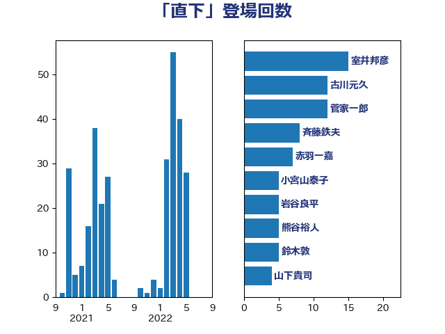

単語「直下」

| 室井邦彦 | 日本維新の会 | 15 回 |
| 古川元久 | 国民民主党 | 12 回 |
| 菅家一郎 | 自由民主党 | 12 回 |
| 斉藤鉄夫 | 公明党 | 8 回 |
| 赤羽一嘉 | 公明党 | 7 回 |
| 小宮山泰子 | 立憲民主党 | 5 回 |
| 岩谷良平 | 日本維新の会 | 5 回 |
| 熊谷裕人 | 立憲民主党 | 5 回 |
| 鈴木敦 | 国民民主党 | 5 回 |
| 山下貴司 | 自由民主党 | 4 回 |
| 平木大作 | 公明党 | 4 回 |
| 早坂敦 | 日本維新の会 | 4 回 |
| 舞立昇治 | 自由民主党 | 4 回 |
| 金子恭之 | 自由民主党 | 4 回 |
| 北神圭朗 | 無所属 | 3 回 |
| 塩田博昭 | 公明党 | 3 回 |
| 山谷えり子 | 自由民主党 | 3 回 |
| 岸田文雄 | 自由民主党 | 3 回 |
| 新藤義孝 | 自由民主党 | 3 回 |
| 伊藤孝恵 | 国民民主党 | 2 回 |
| 住吉寛紀 | 日本維新の会 | 2 回 |
| 坂本哲志 | 自由民主党 | 2 回 |
| 小里泰弘 | 自由民主党 | 2 回 |
| 山田太郎 | 自由民主党 | 2 回 |
| 横沢高徳 | 立憲民主党 | 2 回 |
| 沢田良 | 日本維新の会 | 2 回 |
| 津島淳 | 自由民主党 | 2 回 |
| 渡辺猛之 | 自由民主党 | 2 回 |
| 菅義偉 | 自由民主党 | 2 回 |
| 谷田川元 | 立憲民主党 | 2 回 |
| 鈴木宗男 | 日本維新の会 | 2 回 |
| 長浜博行 | 無所属 | 2 回 |
| 高橋英明 | 日本維新の会 | 2 回 |
| あかま二郎 | 自由民主党 | 1 回 |
| ながえ孝子 | 無所属 | 1 回 |
| 三浦信祐 | 公明党 | 1 回 |
| 下村博文 | 自由民主党 | 1 回 |
| 中川宏昌 | 公明党 | 1 回 |
| 中野洋昌 | 公明党 | 1 回 |
| 丸川珠代 | 自由民主党 | 1 回 |
| 加藤勝信 | 自由民主党 | 1 回 |
| 吉田はるみ | 立憲民主党 | 1 回 |
| 吉田忠智 | 立憲民主党 | 1 回 |
| 堂故茂 | 自由民主党 | 1 回 |
| 塩村あやか | 立憲民主党 | 1 回 |
| 大口善徳 | 公明党 | 1 回 |
| 大野敬太郎 | 自由民主党 | 1 回 |
| 小泉進次郎 | 自由民主党 | 1 回 |
| 山口那津男 | 公明党 | 1 回 |
| 山崎誠 | 立憲民主党 | 1 回 |
| 岡本三成 | 公明党 | 1 回 |
| 平口洋 | 自由民主党 | 1 回 |
| 平将明 | 自由民主党 | 1 回 |
| 斎藤洋明 | 自由民主党 | 1 回 |
| 朝日健太郎 | 自由民主党 | 1 回 |
| 枝野幸男 | 立憲民主党 | 1 回 |
| 柳ヶ瀬裕文 | 日本維新の会 | 1 回 |
| 柴田巧 | 日本維新の会 | 1 回 |
| 根本幸典 | 自由民主党 | 1 回 |
| 森山浩行 | 立憲民主党 | 1 回 |
| 横山信一 | 公明党 | 1 回 |
| 浅田均 | 日本維新の会 | 1 回 |
| 浜田聡 | NHK党 | 1 回 |
| 玄葉光一郎 | 立憲民主党 | 1 回 |
| 田村智子 | 日本共産党 | 1 回 |
| 盛山正仁 | 自由民主党 | 1 回 |
| 石井正弘 | 自由民主党 | 1 回 |
| 石井準一 | 自由民主党 | 1 回 |
| 石川博崇 | 公明党 | 1 回 |
| 稲田朋美 | 自由民主党 | 1 回 |
| 穀田恵二 | 日本共産党 | 1 回 |
| 竹内譲 | 公明党 | 1 回 |
| 細野豪志 | 自由民主党 | 1 回 |
| 美延映夫 | 日本維新の会 | 1 回 |
| 船田元 | 自由民主党 | 1 回 |
| 若宮健嗣 | 自由民主党 | 1 回 |
| 西村康稔 | 自由民主党 | 1 回 |
| 西田実仁 | 公明党 | 1 回 |
| 西田昌司 | 自由民主党 | 1 回 |
| 豊田俊郎 | 自由民主党 | 1 回 |
| 赤池誠章 | 自由民主党 | 1 回 |
| 足立敏之 | 自由民主党 | 1 回 |
| 野田佳彦 | 立憲民主党 | 1 回 |
| 金村龍那 | 日本維新の会 | 1 回 |
| 鈴木貴子 | 自由民主党 | 1 回 |
| 青山大人 | 立憲民主党 | 1 回 |
| 青木愛 | 立憲民主党 | 1 回 |
| 音喜多駿 | 日本維新の会 | 1 回 |
| 高橋千鶴子 | 日本共産党 | 1 回 |